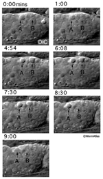

Handbook - Hermaphrodite
Reproductive System Germ Line see also Overview Somatic Gonad Egg-laying Apparatus
3 Germ-line programmed cell deaths
7 References
Figures GermFIG 1 - DIC view of an adult hermaphrodite anterior gonad arm GermFIG 2 - Germ cells GermFIG 3A-D - Germ-line cell nuclei morphologies in meiotic prophase 1 GermFIG 3E - Diakinesis in the proximal gonad arm GermFIG 4A-C - PCD in the adult germ line GermFIG 4D - Time course of germ cell PCD GermFIG 5 - Major sperm protein promotes oocyte maturation and ovulation GermFIG 6 - Germ-line development GermFIG 7A - Sperm development GermFIG 7B - Spermatogenesis GermFIG 7CD - Spermatogenesis GermFIG 8 - Development of FB-MOs during spermiogenesis GermFIG 9 - EM of FB-MOs GermMOVIE 1 - Animation of hermaphrodite gonadogenesis